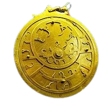

Astrolábio
Um dispositivo usado para medir a altura dos astros, ajudar na navegação e resolver problemas de trigonometria. O astrolábio é um instrumento de cálculo, medição e observação utilizado para a determinação da posição dos astros no céu e para a indicação das altitudes e profundidades. Com essas informações era possível realizar o cálculo das horas, da latitude, dos pontos cardeais e das direções a serem seguidas, bem como identificar quando um determinado evento celeste aconteceu, como o horário do nascer do Sol, por exemplo.Aperfeiçoado pelos árabes e muito usado pelos europeus nas Grandes Navegações, o astrolábio era um instrumento extremamente útil e versátil que foi muito importante para a orientação na superfície terrestre e para os estudos no campo da Astronomia.

 |
 |
 |